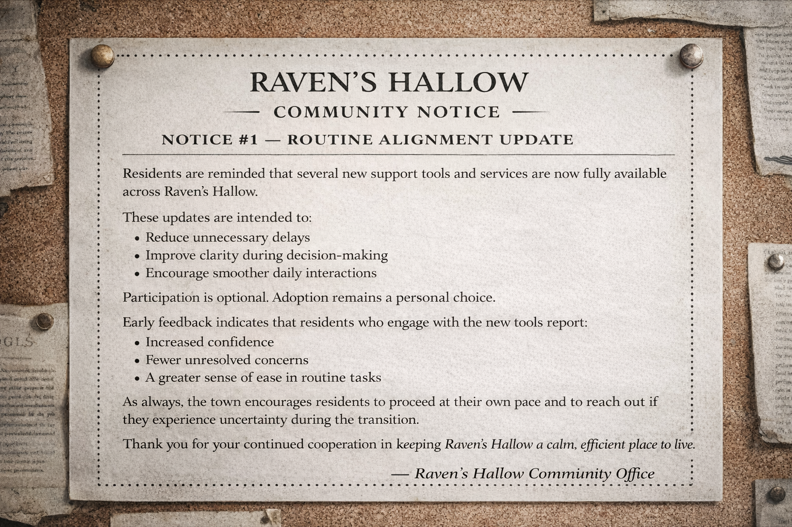
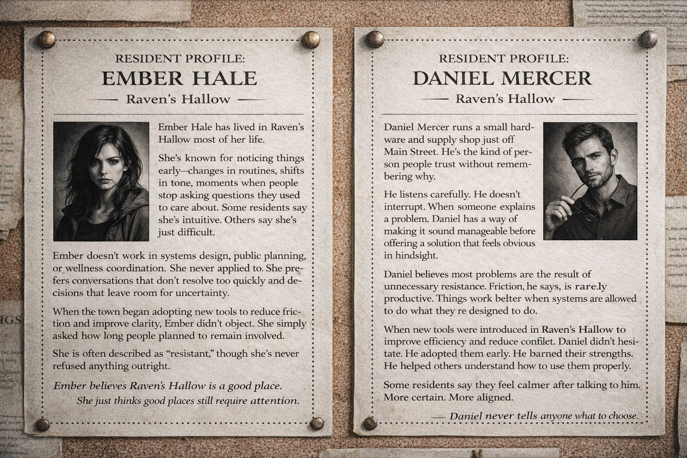

Echo — Resident Records Archive
The following materials relate to documented anomalies observed in the town of Raven’s Hollow.
What began as minor inconsistencies—reflections lagging, conversations resolving too easily, decisions feeling pre-made—gradually revealed a broader pattern.
Residents reported improved efficiency, reduced conflict, and an unusual sense of clarity. Not all changes were unwelcome. Not all changes were noticed.
This archive contains selected profiles, notices, and internal communications compiled during the early and middle stages of the Echo phenomenon.
Materials are presented without interpretation.
Readers are encouraged to review carefully and draw their own conclusions.
Community Notices

Resident Profiles

Echo — Published Volumes
 The First Reflection
The First Reflection
 The Shadow Line
The Shadow Line
 Coauthor
Coauthor
 The Mercy Protocol
The Mercy Protocol
 Final Draft
Final Draft